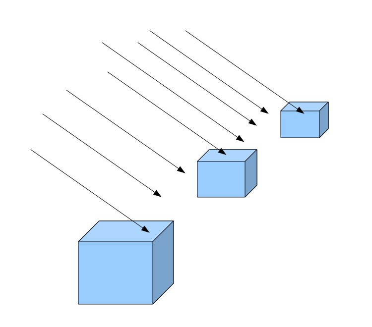
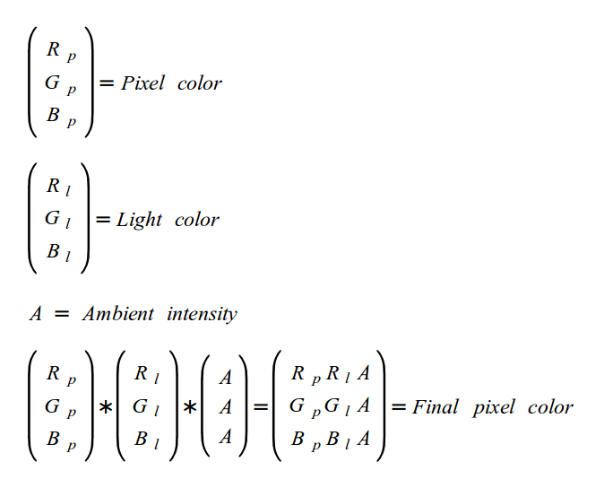

Background
Lighting is one of the most important subjects in the field of 3D graphics. Modeling it correctly adds a lot to the visual appeal of the rendered scene. The reason the word 'modeling' is used is because you cannot simulate exactly what nature does. The real light is made of huge amounts of particles called 'photons' and behaves as waves and particles simultaneously (the 'wave-particle duality' of light). If you try to calculate the effect of each photon in your program you'll run out of compute power really quick.
Therefore, several light models have been developed over the years that capture the core effect that light has when it falls on objects and makes them visible. These light models have become more and more complex as the 3D graphics field advanced and more compute power became available. In the course of the next few tutorials we will go through the basic lighting models that are simpler to implement but contribute immensely to the overall atmosphere of the scene.
The basic light model is called 'Ambient/Diffuse/Specular'. Ambient light is the type of light you see when you go outside in a usual sunny day. Even though the sun is traveling across the sky and its light rays hit the world at different angles in different parts of the day, most of the stuff will be visible, even if it is in shadow. Since light bounces off everything it eventually hits everything so objects that are not in the direct path of the sun are also lit. Even a light bulb in a room behaves like the sun in that sense and spreads ambient light because if the room is not too big everything is lit equally. The ambient light is modeled as light that has no origin, no direction and has an equal effect on all objects in the scene.
Diffuse lighting emphasizes the fact that the angle by which the light hits the surface effects the brightness by which the object is lit. When light hits an object on one side that side is brighter than the other side (the side not directly infront of the light source). We just saw that the sun spreads ambient light which has no specific direction. However, the sun also has diffuse properties in its light. When it hits a tall building you can usually see that one side of the building is lighter than the other side. The most important property of diffuse light is its direction.
Specular lighting is more a property of the object, rather than the light itself. This is what makes parts of things shine when light hits them at a very specific angle and the viewer is positioned at a specific point. Metalic objects often have some kind of specular property. For example, a car in a bright sunny day can sometimes shine off its edges. Calculating specular lighting must take into consideration both the direction the light hits (and bounces off) as well as the position of the viewer.
In 3D applications you usually don't create ambient, diffuse or specular lights directly. Instead, you use light sources such as the sun (when outdoor), a light bulb (indoors) or a flashlight (in a cave). These light source types can have different combinations of ambient, diffuse and specualr intensities as well as specialized properties. For example, a flashlight has a cone of light and things that are far off it are not illuminated by it at all.
In the following tutorials we will develop several useful light source types and study the basic light model as we go along.
We will start with a light source called 'directional light'. A directional light has a direction but no specific origin. This means that all light rays are parallel to each other. The direction of light is specified by a vector and that vector is used to calculate the light on all objects in the scene, regardless of their position. The sun fits very nicely into the category of a directional light. If you try to calculate the precise angle by which the sun hits two adjacent buildings you will end up with two values that are almost identical (i.e. the difference between them will be an extremely tiny fraction). This is because the sun is located some 150 million killometers away. Therefore, we simply disregard its position and take only the direction into account.
Another important property of a directional light is that its brightness remains the same regardless of the distance from the lit object. This is in contrast to another light source which we will study in the coming tutorials, the point light, whose brightness becomes weaker and weaker as it gets further away (e.g. the light bulb).
The following picture illustrates a directional light:
We already saw that the sun has both ambient as well as diffuse properties in its light. We are going to develop the ambient part here and the diffuse part in the next tutorial.
In the previous tutorial we learned how to sample the color of a pixel from a texture. The color has three channels (red, green and blue) and each channel is a single byte. This means that the value of the color can range from 0 to 255. Different combination of channels create different colors. When all channels are zero the color is black. When they are all 255 the color is white. Everything else is in between. By scaling all channels by the same fraction you can have the same basic color but make it brighter or darker (depending on the scaling factor).
When white light hits a surface the reflected color is simply the color of the surface. It can be a bit lighter or darker, depending on the power of the light source, but it is still the same basic color. If the light source is pure red (255,0,0) the reflected color can only be some type of red. This is because the light has no red and blue channels that can reflect back from the surface. If the surface is pure blue the end result will be utter black. The bottom line is that light can only expose the actual color of an object, it cannot "paint" it.
We will specify the color of light sources as a trio of floating point values in the range [0-1]. By multiplying the color of light by the color of the object we get the reflected color. However, we also want to take the ambient intensity of light into account. Therefore, the ambient intensity will be specified as a single floating point value in the range [0-1] which will also be multiplied by all channels of the reflected color that we've just calculated. This will be the final color. The following equation summarizes the calculation of ambient light:
In this tutorial code sample you will be able to play with the 'a' and 's' keys to increase or decrease the intensity of the ambient light and see the effect it has on the textured pyramid from the previous tutorial. This is only the ambient part of a directional light so the direction itself is not yet involved. This will change in the next tutorial when we study diffuse lighting. For now you will see that the pyramid is lit the same regardless of where you look at it.
The ambient light is considered by many as something to be avoided as much as possible. This is because it looks somewhat artificial and the simplicity of implementation doesn't contribute much to the realism of the scene. By using advanced methods such as global illumination one can eliminate the need for ambient light because the light that reflects off objects and hits other objects can also be taken into account. Since we are not there yet you will usually need some small amount of ambient light to avoid cases where one side of an object is lit and the other is in complete darkness. At the end of the day getting light to look good invloves a lot of playing with the parameters and tune-work.
Source walkthru
Our code samples are growing more complex over time and this trend will continue. In this tutorial, in addition to implementing ambient lighting, we also do a major restructure of the code. This will put the code in a better position for the tutorials ahead. The major changes are:
- Encapsulating shader manangement in the Technique class. This includes activities such as compilation and linkage. From now on we will be implementing our visual effects in classes that are derived from the Technique class.
- Moving of GLUT initialization and callback management into the GLUTBackend component. This component registers itself to receive callback calls from GLUT and forwards them to the application using a C++ interface called ICallbacks.
- Moving the global functions and variables in the main cpp file into a class that can be considered "the application". In the future we will extend this into a base class for all applications which will provide common functionality for all. This approach is very popular in many game engines and frameworks.
Most of the code in this tutorial (except the lighting specific code) is not new and has simply been rearranged according to the above design principles. Therefore, only the new headers files are reviewed.
(glut_backend.h:24)
void GLUTBackendInit(int argc, char** argv);
bool GLUTBackendCreateWindow(unsigned int Width, unsigned int Height, unsigned int bpp, bool isFullScreen, const char* pTitle);
A lot of the GLUT specific code has been moved to a "GLUT backend" component which makes it easier to initialize GLUT and create a window using the above simple functions.
(glut_backend.h:28)
void GLUTBackendRun(ICallbacks* pCallbacks);
After GLUT is initialized and a window is created the next step is to execute GLUT main loop using the above wrapper function. The new addition here is the ICallbacks interface which helps in registering GLUT callback functions. Instead of having each application register the callbacks on its own the GLUT backend component registers its own private functions and delivers the event to the object specified in the call to the function above. The main application class will often implement this interface on its own and simply pass itself as a paramemter in the call to GLUTBackendRun. This approach was selected for this tutorial too.
(technique.h:25)
class Technique
{
public:
Technique();
~Technique();
virtual bool Init();
void Enable();
protected:
bool AddShader(GLenum ShaderType, const char* pShaderText);
bool Finalize();
GLint GetUniformLocation(const char* pUniformName);
private:
GLuint m_shaderProg;
typedef std::list<GLuint> ShaderObjList;
ShaderObjList m_shaderObjList;
};
In the previous tutorials all the grind work of compiling and linking the shaders was part of the application responsibility. The Technique class helps by wrapping the common functionality into itself and allowing derived class to focus on the core of the effect (a.k.a the 'Technique').
Each technique must first be initialized by calling the Init() function. The derived technique must call Init() of the base class (which creates the OpenGL program object) and can add its own private initialization here.
After a Technique object is created and initialized the usual sequence is for the derived technique class to call the protected function AddShader() on as many GLSL shaders (provided in a character array) as needed. Lastly, Finalize() is called to link the objects. The function Enable() is actually a wrapper for glUseProgram() so it must be called whenever switching a technique and calling the draw function.
This class tracks the intermediate compiled objects and after linking deletes them using glDeleteShader(). This helps in reducing the amount of resources your application is consuming. For better performance OpenGL applications often compile all shaders during load time and not during run time. By removing the objects immediately after linking you help keep the OpenGL resources consumed by your app low. The program object itself is deleted in the destructor using glDeleteProgram().
(tutorial17.cpp:49)
class Tutorial17 : public ICallbacks
{
public:
Tutorial17()
{
...
}
~Tutorial17()
{
...
}
bool Init()
{
...
}
void Run()
{
GLUTBackendRun(this);
}
virtual void RenderSceneCB()
{
...
}
virtual void IdleCB()
{
...
}
virtual void SpecialKeyboardCB(int Key, int x, int y)
{
...
}
virtual void KeyboardCB(unsigned char Key, int x, int y)
{
...
}
virtual void PassiveMouseCB(int x, int y)
{
...
}
private:
void CreateVertexBuffer()
{
...
}
void CreateIndexBuffer()
{
...
}
GLuint m_VBO;
GLuint m_IBO;
LightingTechnique* m_pEffect;
Texture* m_pTexture;
Camera* m_pGameCamera;
float m_scale;
DirectionalLight m_directionalLight;
};
This is a skeleton of the main application class which encapsulates the remaining code we are already familiar with. Init() takes care of creating the effect, loading the texture and creating the vertex/index buffers. Run() calls GLUTBackendRun() and passes the object itself as a parameter. Since the class implements the ICallbacks interface all the GLUT events end up in the proper methods of the class. In addition, all the variables that were previously part of the global section of the file are now private attributes in the class.
(lighting_technique.h:25)
struct DirectionalLight
{
Vector3f Color;
float AmbientIntensity;
};
This is the beginning of the defintion of the directional light. Right now, only the ambient part exists and the direction itself is still absent. We will add the direction in the next tutorial when we review diffuse lighting. The structure contains two fields - a color and an ambient intensity. The color determines what color channels of the objects can be reflected back and in what intensity. For example, if the color is (1.0, 0.5, 0.0) then the red channel of the object will be reflected fully, the green channel will be scaled down by half and the blue channel will be dropped completely. This is because an object can only reflect the incoming light (light sources are different - they emit light and need to be handled separately). In the case of the sun the usual color would be pure white (1.0, 1.0, 1.0).
The AmbientIntensity specifies how dim or bright is the light. You can have a pure white light with intensity of 1.0 so that the object is full lit or an intensity of 0.1 which means the object will be visible but appear very dim.
(lighting_technique.h:31)
class LightingTechnique : public Technique
{
public:
LightingTechnique();
virtual bool Init();
void SetWVP(const Matrix4f& WVP);
void SetTextureUnit(unsigned int TextureUnit);
void SetDirectionalLight(const DirectionalLight& Light);
private:
GLuint m_WVPLocation;
GLuint m_samplerLocation;
GLuint m_dirLightColorLocation;
GLuint m_dirLightAmbientIntensityLocation;
};
Here is the first example of the usage of the Technique class. LightingTechnique is a derived class that implements lighting using the common functionality of compiling and linking provided by the base class. The Init() function must be called after the object is created. It simply calls Technique::AddShader() and Techique::Finalize() to generate the GLSL program.
(lighting.fs)
#version 330
in vec2 TexCoord0;
out vec4 FragColor;
struct DirectionalLight
{
vec3 Color;
float AmbientIntensity;
};
uniform DirectionalLight gDirectionalLight;
uniform sampler2D gSampler;
void main()
{
FragColor = texture2D(gSampler, TexCoord0.xy) *
vec4(gDirectionalLight.Color, 1.0f) *
gDirectionalLight.AmbientIntensity;
}
The vertex shader remains unchanged in this tutorial. It keeps passing the position (after having multiplied it by the WVP matrix) and the texture coordinates. All the new logic goes into the fragment shader. The new addition here is the use of the 'struct' keyword to define the directional light. As you can see, this keyword is used in practically the same way as in C/C++. The structure is identical to the one we have in the application code and we must keep it that way so that the application and the shader can communicate.
There is now a new uniform variable of the DirectionalLight type that the application needs to update. This variable is used in the calculation of the final pixel color. As before, we sample the texture to get the base color. We then multiply it by the color and ambient intensity, per the formula above. This concludes the calculation of the ambient light.
(lighting_technique.cpp:44)
m_WVPLocation = GetUniformLocation("gWVP");
m_samplerLocation = GetUniformLocation("gSampler");
m_dirLightColorLocation = GetUniformLocation("gDirectionalLight.Color");
m_dirLightAmbientIntensityLocation = GetUniformLocation("gDirectionalLight.AmbientIntensity");
In order to access the DirectionalLight uniform variable from the application you must get the location of both of its fields independently. The LightingTechnique class has four GLuint location variables in order to access the uniforms in the vertex and the fragment shader. The WVP and sampler locations are fetched in the familiar way. The color and ambient intensity are fetched in the way that we see above - by specifying the name of the uniform variable in the shader followed by a dot and then the name of the field in the structure itself. Setting the value of these variables is done in the same way as any other variable. The LightingTechnique class provides two methods to set the directional light and the WVP matrix. The Tutorial17 class calls them prior to each draw to update the values.
This tutorial allows you to play with the ambient intensity using the 'a' and 's' keys that increase and decrease it, respectively. Follow the KeyboardCB() function in the Tutorial17 class to see how this is done.
For more information on this subject check out the following video tutorial by Frahaan Hussain.
Next tutorial